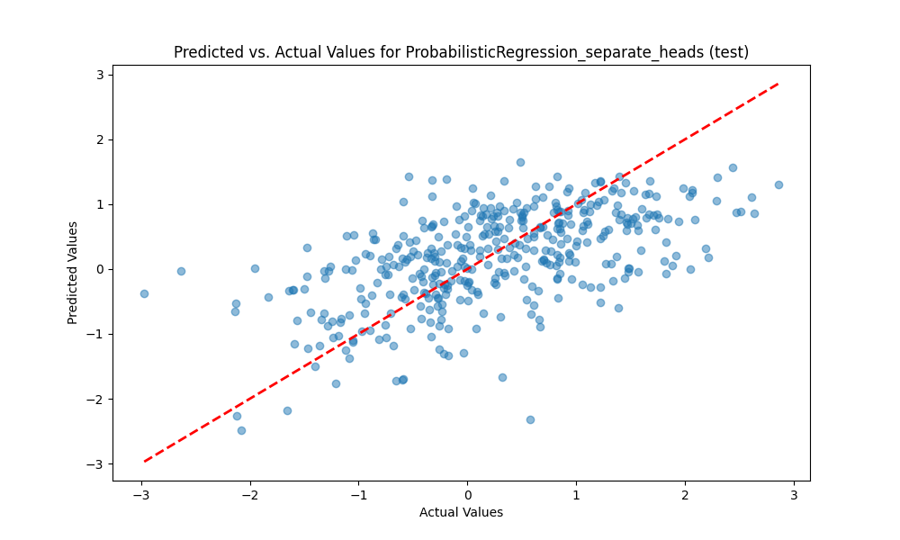
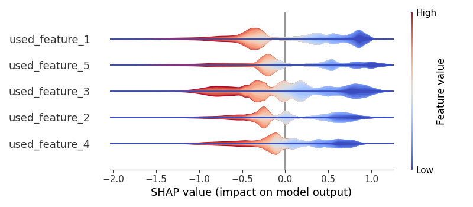
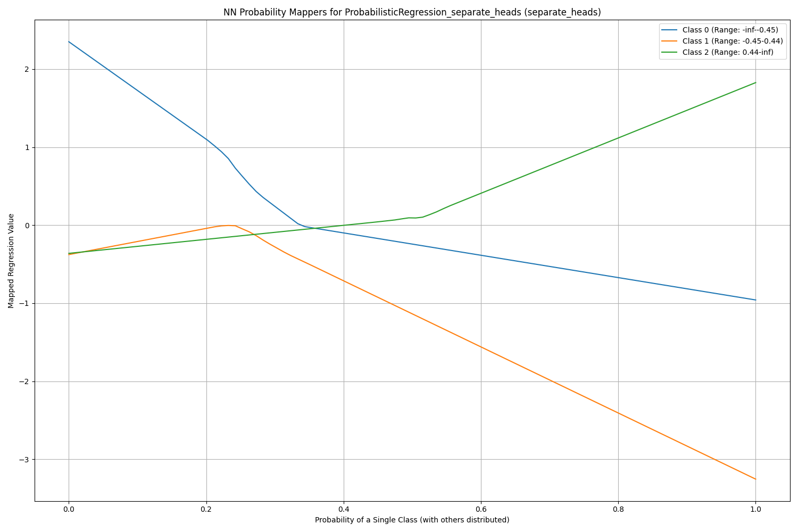
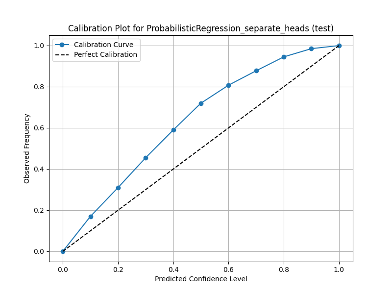
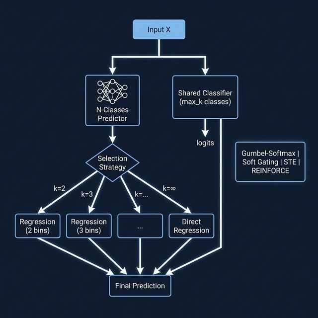

Bridging Classification and Regression for Robust Predictions with Calibrated Uncertainty
Farhan Feroz
Senior Research Associate Interview • The Alan Turing Institute
February 2026
Classification is inherently more robust to noise than regression.
By discretising the target space, we trade resolution for stability — and can recover full regression in the limit.
End-to-end differentiable pipeline from features to probabilistic predictions
The number of classes k controls the precision-robustness trade-off
| Regime | n_classes | Behaviour | Use Case |
|---|---|---|---|
| High Noise / Low SNR | k = 2–3 | Coarse bins → robust to noise | Noisy physical measurements, financial data |
| Medium Noise | k = 4–6 | Balanced resolution vs robustness | Typical ML regression problems |
| Low Noise / High SNR | k → ∞ | Approaches pure regression | Clean data, high precision required |
Intuition: With k=2 (binary), the classifier only distinguishes "above median" from "below median" — an easier task, robust to noise. As k→∞, each bin holds a single value, recovering standard regression. The optimal k is data-dependent and relates inversely to the noise level.
Synthetic data: y = sin(x)·2 + 0.5x + noise | Noise levels: 0.05, 0.5, 1.5
Key Finding: At high noise (σ=1.5), small k (2-3) minimises MSE. At low noise (σ=0.05), larger k performs best. The optimal k tracks the SNR.


The regression heads learn non-linear probability-to-value mappings


Three regression strategies implemented: Separate Heads Independent NN per class — most expressive, supports monotonic constraints | Single Head (N outputs) Shared NN, k outputs — parameter efficient | Single Head (Final) One NN, weighted output — simplest
Can we learn k from data rather than treating it as a hyperparameter?
A secondary "n_classes predictor" network selects optimal k per sample.
Challenge: k is a discrete variable — standard gradient descent doesn't apply.
Differentiable categorical sampling via temperature-annealed reparameterisation trick
Continuous softmax weighting over k ∈ {2, ..., max_k, ∞}
Hard selection forward, soft gradients backward — discrete at inference
Policy gradient — k as a discrete action with reward signal from validation loss

Connection to NAS: This is essentially an instance of differentiable architecture search — the model learns its own optimal complexity per sample.
Connecting probabilistic regression to the Turing Fundamental Research mission
Robust surrogate for expensive physical simulations with calibrated uncertainty — essential for multi-fidelity workflows
Law of Total Variance provides principled uncertainty propagation — critical for safety-critical physical systems and decision-making
Physical measurements are inherently noisy — the n_classes proxy offers a principled way to handle varying SNR without manual tuning
Calibrated uncertainty feeds into conformal prediction frameworks for finite-sample coverage guarantees
Modular PyTorch package with Optuna HPO, SHAP explainability, CV, and reproducible experiments
Designed for extension — application to climate, materials science, fluid dynamics, and other physical systems
Thank You
Questions & Discussion